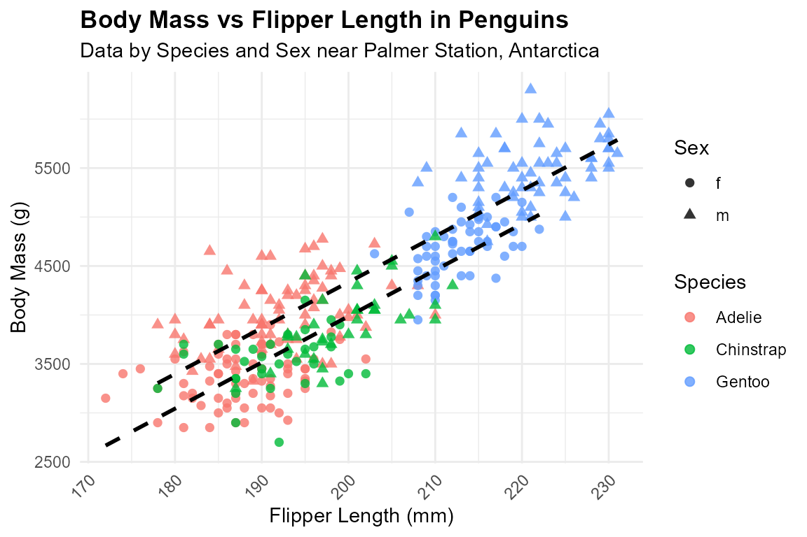

PenguinR: A Comprehensive Collection of Penguin Datasets for Statistical Analysis and Experimental Design
Source:vignettes/PenguinR_vignette.Rmd
PenguinR_vignette.Rmd
library(PenguinR)
library(ggplot2)
#> Warning: package 'ggplot2' was built under R version 4.5.1
library(dplyr)
#>
#> Attaching package: 'dplyr'
#> The following objects are masked from 'package:stats':
#>
#> filter, lag
#> The following objects are masked from 'package:base':
#>
#> intersect, setdiff, setequal, unionIntroduction
The PenguinR package offers a rich and diverse
collection of datasets focused on penguin biology, ecology, and
behavioral studies. It includes data on species morphology,
clutch completion, blood isotope composition, and heart rate
measurements collected from adult foraging penguins near
Palmer Station, Antarctica.
The package contains a wide variety of data types, including morphometric, physiological, ecological, and experimental datasets. These datasets encompass flipper length, body mass, bill dimensions, reproductive success indicators, metabolic activity, and isotopic composition, enabling detailed exploration of penguin biology through the lens of statistical analysis and experimental design.
Dataset Suffixes
Each dataset in the PenguinR package uses a
suffix to denote the type of R object:
-
_df: A data frame
Example Datasets
Below are selected example datasets included in the
PenguinR package:
penguins_df: Size Measurements for Adult Foraging Penguins near Palmer Station, Antarctica.penguins_raw_df: Penguin Size, Clutch, and Blood Isotope Data for Foraging Adults near Palmer Station, Antarctica.peng_df: Size Measurements for Penguins near Palmer Station, Antarctica.pinguinos_df: Penguin Heart Rate.
Data Visualization with PenguinR Data
Size Measurements for Penguins near Palmer Station, Antarctica
# Prepare summary or filtered data (optional)
peng_summary <- peng_df %>%
filter(!is.na(flipper_length), !is.na(body_mass)) %>%
group_by(species, sex) %>%
summarise(
mean_flipper = mean(flipper_length, na.rm = TRUE),
mean_mass = mean(body_mass, na.rm = TRUE),
.groups = "drop"
)
# Scatterplot: Body mass vs Flipper length by species and sex
ggplot(peng_df, aes(x = flipper_length, y = body_mass, color = species, shape = sex)) +
geom_point(size = 2, alpha = 0.8) +
geom_smooth(method = "lm", se = FALSE, linetype = "dashed", color = "black") +
labs(
title = "Body Mass vs Flipper Length in Penguins",
subtitle = "Data by Species and Sex near Palmer Station, Antarctica",
x = "Flipper Length (mm)",
y = "Body Mass (g)",
color = "Species",
shape = "Sex"
) +
theme_minimal() +
theme(
plot.title = element_text(face = "bold"),
axis.text.x = element_text(angle = 45, hjust = 1)
)
#> `geom_smooth()` using formula = 'y ~ x'
Conclusion
The PenguinR package provides a comprehensive and
well-structured collection of datasets centered on penguin biology and
ecology, designed to support learning, teaching, and research in
statistical analysis and experimental design.
By integrating data on morphology, reproductive success, blood isotope composition, and heart rate, the package offers users the opportunity to apply a wide range of statistical methods—including descriptive analysis, ANOVA, regression, and multivariate techniques—using authentic ecological data.
Whether for educational use, methodological demonstration, or
reproducible research, PenguinR serves as a
valuable tool that bridges data science and biology, helping users
develop analytical skills while exploring the fascinating world of
penguins near Palmer Station, Antarctica.